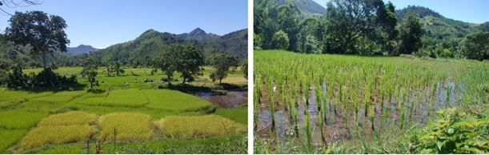
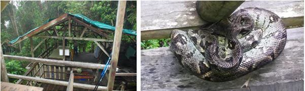
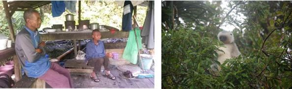
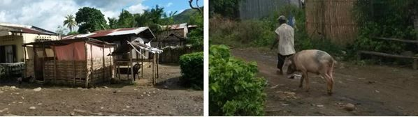

Reisebericht zum Marojejy Trekking im Mai 2017
Unser Guide Mosesy holt uns zusammen mit seinem Fahrer „Pecto“ am Flughafen Sambava ab. Welche Überraschung, eine gute Kollegin von uns war schon vor 7 Jahren mit Mosesy im Marojejy unterwegs. Sie bringen uns ins Hotel Mimi und informieren uns, dass sie uns in einer Stunde wieder abholen werden. Mosesy hat für uns (von sich aus, damit uns nicht langweilig sei) eine Führung auf Afrikas grösster Kokosplantage organisiert. Wir erfahren viel über die Aufzucht, Anbau, Ernte und Verarbeitung der Palmen sowie Nüsse. Natürlich kommen wir auch in Genuss von frischem Kokoswasser. Am Nachmittag gehen wir auf eigene Faust durch den Markt von Sambava. (Mosesy hätte uns auch hier begleitet).

Marojejy Trekking: Tag 1
Am anderen Morgen geht es los. Das Hotel Mimi ist weit herum bekannt für gute Küche sowie hervorragende Backstube. So wird hier Pectos Wagen vollgeladen mit Kisten und Kübeln. Auf guter Strasse fahren wir gegen Mandena, schon von weitem sehen wir unser Ziel das Marojejy-Massiv. Der Gipfel trägt eine Wolkenkappe und die Höhe des Berges jagt uns doch etwas Respekt ein. Da wird es wirklich viele Höhenmeter zu bewältigen geben.
Beim Parkbüro erledigt Mosesy den Papierkram und wir erleichtern unsere Rucksäcke nochmals um ein paar Sachen, die wir glauben entbehren zu können. Der ganze Proviant wird nun in Körbe, Taschen, Rucksäcke verstaut und von den Trägern zum Camp 1 (450m ü.M) gebracht. Barfuss oder in Flipflop tragen sie das Material auf Rücken, Kopf oder Schultern.
Wir fahren noch ein kleines Stück bis Mandena, schultern die Rucksäcke und starten unser Abenteuer. Zuerst führt der Weg ca. 3 Kilometer durch Reisfelder Richtung Regenwald. Wir sind begeistert von all den Farben sowie Eindrücken. Das für uns ungewohnte schwülheisse Klima lässt den Schweiss in Strömen fliessen. Wir passieren einen Unterstand wo zwei ältere Männer Wache halten. Zwei Monate bevor die Vanilleernte beginnt, wird der Weg Tag und Nacht bewacht.
Kurz darauf erreichen wir die Grenze zum Marojejy Nationalpark. Der Schatten ist willkommen und der Weg führt leicht aufwärts zum Camp Mantella. Dort erwartet uns bereits ein gedeckter Tisch. Marcel, unser Koch ist eifrig am kochen. Unser erstes Menu besteht aus Rüeblisalat mit Tomatenscheiben dekoriert, Thunfischtranche mit Reis, zum Dessert frische Mandarinen. Es ist unglaublich was wir in diesen Tagen serviert bekommen, alles auf dem Feuer gekocht/gewärmt. Eigentlich haben wir uns auf einfaches Essen eingestellt und werden jeden Tag aufs Neue überrascht. Alles wird in Schüsseln in riesigen Mengen serviert.
Beim Abstecher zum nahen Wasserfall nutzen wir den Bach unterwegs zum Bad. Von dort geht’s weiter durch das Blutegelparadies bis zum Cascade de Humbert. Gegen die unliebsamen Sauger reibt sich Mosesy die Füsse mit Salz ein, besprüht sich dann aber gerne mit unserem Mückenspray, der die Viecher etwas fernhält.
Zurück im Camp werden wir schon bald wieder zu Tisch gerufen. Suppe, Gurkensalat, Zebusteak mit Reis, gebratene Bananen. Über uns spannt sich unterdessen ein grandioser Sternenhimmel auf, doch wir kriechen schon früh in unsere Schlafsäcke. Die sechs Hütten sind mit je vier Bettstellen sowie Wolldecken ausgestattet. Mit all den Nachtgeräuschen des Regenwaldes schlafen wir schnell ein.

Marojejy Trekking: Tag 2
Der Morgen beginnt grau und verhangen. Zum Frühstück gibt es Brötchen aus der Mimi Backstube, Konfitüren sowie Honig. Das Honigglas wird innert Minuten von Wildbienen in Beschlag genommen. Marcel verwöhnt uns mit perfekten Spiegeleiern. Gut gestärkt machen wir uns für den heutigen Aufstieg bereit. Da es bereits zu regnen beginnt, montieren wir unsere Regenkleider und Wanderschuhe. Zügig geht’s aufwärts zu Camp 2 (775m ü.M.), abermals durch ein „Blutegelreservat“.
Die Viecher pirschen sich von allen Seiten an und erlaben sich an unserem Blut. Im Camp 2 gibt es beim gedeckten Essplatz eine Pause, unterdessen sind wir pflotschnass, aussen Regen – innen Schweiss. Da es so warm ist, stört die Nässe gar nicht. Unter der Bank hat sich eine Boa ein trockenes Plätzchen gesucht. Auch viele schöne Spinnen haben ihre Netze im Schutz des Regendaches gespannt.
Weiter geht es im strömenden Regen Richtung Camp 3, der Rucksack wird immer schwerer und der Weg steiler. Unser Tracker hat unterwegs Seidensifakas gesichtet. Was für ein Schauspiel, wie Gummibälle springen sie von einer Baumkrone zur nächsten. Wir verfolgen die Gruppe eine Weile Waldab und –auf. Die momentane Regenpause ist willkommen. Mosesy erzählt uns viel Wissenswertes über die Tiere. Fotos werden geschossen und wir geniessen das Treiben der Tiergruppe. Wir begegnen auch roten Tausendfüssern und einem grünen Riesensaftkugler (Zoosphaerium neptunus), Blattschwanzgeckos (König der Tarnung), Stabheuschrecken, div. Vögel, Bambuslemuren, Ringelschwanzmungo, Spinnen in allen Variationen.
Der weitere Aufstieg ist steil und verlangt uns alles ab. Mosesy schlägt ein strammes Tempo an. Mit kurzen Beinen ist man/frau ganz klar im Nachteil 😉 Zum Glück können wir uns oft an Wurzeln sowie an Ästen hochziehen. Es regnet wieder unaufhörlich und wir erreichen am Ende unserer Kräfte Camp 3 ( zwei Hütten, 1250m ü.M).
Nachdem wir unsere nassen Sachen aufgehängt haben, geniessen wir das trockene Plätzchen. Hier ist es merklich kühler, somit für uns viel angenehmer. Unsere Madagassen hingegen drängen sich mit Wolldecken um den Feuertopf.
Strahlend bringt uns Marcel ein BIER und Salzgebäck . Er ist einfach der Beste!!!
Auch heute werden wir reich bekocht. Mosesy bringt nach dem Essen eine Gottesanbeterin, wirklich ein skurriles Tier. Er bespricht mit uns den morgigen Tag. Falls der Regen in der Nacht bis 3.00h aufhört, wollen wir um 6.30 zum Gipfelaufstieg starten. Todmüde sinken wir ins Bett. Die ganze Nacht regnet es munter weiter und hört erst kurz vor sechs Uhr in der Früh auf.

Marojejy Trekking: Tag 3
Wir gehen eigentlich in der Überzeugung zum Frühstück, dass wir heute ohne Gipfelsturm wieder absteigen. Doch da kennen wir Mosesy schlecht. Er lässt keinen Zweifel aufkommen, nicht aufzusteigen. So trödeln wir noch etwas während des Essens, was sich in der Folge lohnt. In den Baumkronen turnt ein grösserer brauner Lemur umher. Vom Frühstückstisch aus lässt er sich beobacheten. Kurz darauf wird die Überraschung noch grösser. Gleich neben unserem Camp entdecken wir einen Seidensifaka im Geäst. Alle sind begeistert, auch unsere Crew ist ganz aus dem Häuschen. „You are so lucky, you are so lucky“ Der putzige Kerl liefert die perfekte Show, er stopft sich mit Blättern voll und lässt sich jede Menge Zeit. Offenbar kommen die Sifakas sonst nicht so nahe zum Camp. Unser Tag könnte nicht besser beginnen.
Durch den unverhofften Besuch, ist es bereits nach acht und wir starten mit ganz leichtem Gepäck (Wasser und etwas Proviant) Richtung Gipfel. Ohne Ballast auf dem Rücken fühlen wir uns federleicht und in der angenehm kühlen Luft kommen wir gut voran. Der Weg geht steil bis sehr steil aufwärts. Auch jetzt benutzen wir Wurzeln sowie Pflanzen als Haltegriffe. Damit der Handgriff nicht schmerzhaft wird, heisst genau hinzuschauen. Stacheln, Dornen und scharfkantige Blätter hinterlassen ihre Spuren an unseren Händen. Mosesy lässt uns vorangehen und das Tempo bestimmen. Hin und wieder regnet es kurz. Die Vegetation wird allmählich niedriger und bald wachsen nur noch Büsche. Immer wieder bleiben wir stehen und bestaunen die exotische Flora und Fauna. Winzige Orchideen, tausende Farne, Ameisennester, die im Regen in luftiger Höhe an Ästen hängen und und und.. .
Wir sind glücklich sowie überwältigt. (An die nassen Schuhe und Kleider haben wir uns längst gewöhnt). An einigen Passagen sind Seile angebracht, damit sie überwindbar werden. Immer höher bringt uns der Weg. Nach knapp drei Stunden ist der Gipfel schon nah. Er hüllt sich jedoch in dichten Nebel und ein starker Wind weht.
Leider regnet es wieder heftig. So beschliessen wir nach kurzer Stärkung den Rückweg anzutreten. Über den steilen Pfad geht es wieder zurück. Zwischendurch öffnet sich der Nebel und gibt einen beeindruckenden Blick frei über den Marojejy. Teilweise müssen wir rückwärts absteigen, weil der Weg so glitschig und steil ist. Das Zeitgefühl ist uns abhanden gekommen und wir staunen, dass bei unserer Rückkehr ins Camp Simpona schon 14.00 Uhr ist. Nach dem Mittagessen packen wir unseren Rucksack und weiter geht es bergab Richtung Camp 2 Marojejy. Der Regen hat ein Einsehen und bei der Aussichtsplattform reissen die Wolken auf, der blaue Himmel zeigt sich und wir werden belohnt mit einer grandiosen Aussicht über den Regenwald sowie die nahen Berge.
Schon wieder ein unerwartetes Geschenk. Wir können uns kaum satt sehen, doch wir müssen weiter. Es wartet noch ein steiler Abstieg und nach 17.00 beginnt es zu dämmern. Unsere Knie sind Gummi und die Beine Pudding. Im letzten Tageslicht überqueren wir den breiten Bach beim Camp 2. Durch den starken Regen führt er viel Wasser. Aber wir schaffen es heil hinüber. Wir sind überglücklich, aber auch todmüde. Nach dem Abendessen kriechen wir (heute mal richtig spät ;-)) um halb neun in unsere Schlafsäcke. Die Regenmusik auf dem Dach und das Rauschen des nahen Baches lassen uns schnell einschlafen.

Marojejy Trekking: Tag 4
Um 6.00 heisst es aufstehen, wir ziehen unsere feuchten Kleider sowie Schuhe wieder an. Das ist zwar im ersten Augenblick „sehr gruusig“, im zweiten „gruusig“ und im dritten hat man sich schon daran gewöhnt. Innert kürzester Zeit ist sowieso alles wieder nass, da es auch heute morgen wie aus Kübeln giesst. Nur schon der Weg über die steilen glitschigen Stein- und Holzstufen zum überdachten Essplatz hinauf (und hinunter), ist eine Herausforderung. Getoastetes Brot und ein Riesenomelett stärken uns für den heutigen Tag.
Gut eingepackt wegen des Regens, aber vor allem wegen der Blutegel, laufen wir los. Unterdessen leisten unsere Wanderstöcke wieder gute Dienste, da es hier nicht gar so steil ist. Im Geäst zeigt sich kurz ein brauner Lemur. Immer wieder queren wir Bäche, was nach dem starken Regen nicht immer einfach ist. Die Steine sind rutschig und jeder zieht mal einen Schuh voll raus. Irgendwann bemerke ich, dass Romans Brille fehlt. Er hat sie wohl bei so einer Rutschpartie verloren. Wir gehen zwar noch ein Stück bis zum letzten Bach zurück, doch die Sucherei bleibt ohne Erfolg.
Der Regen hat nun endgültig aufgehört, und je weiter wir absteigen umso wärmer und schwüler wird es. Durch die Brillen-Suchaktion haben wir viel Zeit verloren, deshalb geht es nun zügig Richtung Mandena. Am Wegrand kriecht behäbig ein Chamäleon, Dorfbewohner sind mit Holz und Körben unterwegs, Frauen sitzen vor ihren Hütten und flechten sich die Haare, viele winken uns. Ein Mann führt sein Schwein an der Leine über den Weg, eine junge Frau stampft Reis, Kinder spielen und winken zurück. Auch hier ist alles aufgeweicht vom heftigen Regen. Im Dorf gibt es noch ein letztes Festessen, Salat mit Poulet sowie Reis, zum Abschluss Früchte.
Pecto ist schon da mit seinem Wagen, und so verabschieden wir uns von Marcel unserem Koch und unserem Träger. Auf der Rückfahrt holen wir im Besuchercenter unser Restgepäck ab, und verabschieden uns auch von unserem Tracker, der extra vorbeikommt um ADE zu sagen. Wir sind schmutzig, stinkig, verschrammt aber überglücklich.

Fazit zum Marojejy Trekking
Trotz (oder gerade wegen) enormer Anstrengung, Blasen an den Füssen, Schrammen und Schnitte an Händen sowie Beinen, Dauernässe, Blutegeln, dünnem Mist (sprich: Durchfall) und verlorener Brille war es eine unglaubliche Erfahrung, die eigenen Grenzen wieder einmal zu erleben und zu erkennen, dass vieles was uns wichtig erscheint gar nicht so wichtig ist. Es ist alles relativ.
Dazu die Vielfalt der Pflanzen- und Tierwelt, die freundlichen Menschen, die uns begleitet und verwöhnt haben, auch ihre ehrliche Freude wenn sie Sifakas sowie andere Tiere sahen und uns zeigen konnten.
Wir sind uns bewusst, dass wir das absolute Luxuspaket erhalten haben. Im Vorfeld haben wir uns auf ein einfaches Leben im Regenwald eingestellt. Umso überraschter waren wir über das üppige Morgenessen, das warme, mehrgängige Mittag- und Abendessen, immer mit Fleisch oder Fisch. Es war alles phantastisch, mit Liebe gekocht und serviert und doch beschlich uns jeweils ein zwiespältiges Gefühl, wenn wir bedachten, dass unsere Begleiter selber eher selten Fleisch auf dem Teller haben. (Kritik auf sehr hohem Niveau ;-))
Wir genossen auch die Einsamkeit, trafen wir doch ausser am ersten Tag, auf keine anderen Gruppen.
Das Marojejy Trekking war einer der absoluten Höhepunkte unserer Madagaskarreise.
Wir bedanken uns für die perfekte Planung durch PRIORI.
Irmgard und Roman Stössel
Hier finden Sie auch noch einmal den gesamten Reisebericht inklusive der Bilder im PDF-Format.